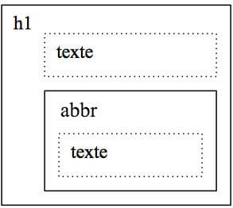
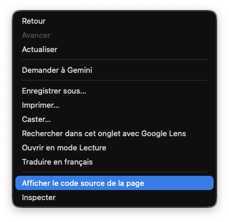

Qu'est-ce qu'un navigateur Web?
Un navigateur Web est un logiciel qui permet d'afficher des pages Web et d'interagir avec leur contenu. Il en existe plusieurs: Microsoft Edge, Google Chrome, Firefox, Safari, etc.
Tout au long du cours Intégration 1, nous utiliserons le navigateur Google Chrome. Assurez-vous donc d'avoir installé ce navigateur sur votre poste de travail.
Qu'est-ce qu'une page web ?
Une page web est un document numérique qui permet d'afficher du texte, des images et des contenus média variés.
La structure du contenu de la page web est assurée par un document HTML.
Le rendu visuel de la page web est pris en charge par un navigateur web graphique, en fonction des informations de mise en forme inscrites dans la feuille de style, ou CSS.
HTML pour la structure
C'est le langage HTML qui permet d'élaborer la structure du contenu d'une page web.
HTML signifie Hypertext Markup Language, ou « langage de balisage hypertexte » en français.
Il s'agit d'un langage créé et utilisé pour rédiger les pages web en recourant au principe du balisage.
Le balisage sert à donner un sens au contenu de la page web.
HTML n'est pas un langage de programmation à proprement parlé mais bien un langage de balisage, car il n'utilise pas de variables et ne permet pas de décrire une action à exécuter.
Que vous utilisiez un éditeur de texte simple (par exemple, TextEdit sur MacOS) ou un éditeur HTML dédié, un document HTML n'est rien de plus qu'un simple document texte.
CSS pour la mise en forme
CSS signifie Cascading Style Sheet ou, en français, « feuille de style en cascade ».
Au document HTML s'adjoint une feuille de style - ou CSS - qui contient les règles de style, c'est-à-dire les informations de mise en forme.
Ce sont les règles de style qui permettent de positionner les éléments de contenu de la page. Autrement dit, pour un même contenu, la mise en forme peut varier du tout au tout, comme le montre le site des Jardins Zen .
Nous reviendrons bientôt au langage CSS.
Voyons d'abord les bases du langage HTML.
Balises HTML
Le langage HTML :
- sert à structurer le contenu d'une page web;
- sert à donner du sens au contenu d'une page web;
- repose sur l'utilisation de balises.
Voici comment est écrit un paragraphe en langage HTML :
Code
<p>HTML repose sur l'utilisation de balises.</p>
Les régles d'écriture des balises
Les balises sont délimitées par des chevrons ouvrant (<) et fermant (>).
Les balises fonctionnent par paires (mais il y a des exceptions), soit une balise ouvrante (<p>) et une balise fermante (</p>).
Ces paires délimitent la portion de texte à laquelle elles s'appliquent.
Balises vides
Parfois, une balise est refermée immédiatement et ne forme pas de paire: c'est une balise dite «vide». Elle délimite alors un point et non une zone du document. Par exemple, la balise <br> , qui commande un changement de ligne, ou encore la balise <img>, qui commande l'affichage d'une image, sont des balises vides.
Syntaxe
Le nom des balises s'écrit tout en minuscules. Par exemple, <strong>...</strong> est la façon correcte d'écrire cette balise.
Le langage HTML est permissif quant à la syntaxe utilisée. En conséquence, il existe plusieurs façons valides de rédiger une balise. Par exemple, on peut aussi bien écrire <p> ...</p> ou <P>...</P>, ou encore <br>, <br /> ou <BR>. Chacune de ces formes est valide. Cependant, les bonnes pratiques en matière d'intégration commandent avant tout l'uniformité dans la rédaction du code. C'est pourquoi les conventions d'écriture énumérées ici, bien qu'elles ne soient pas les seules valides, seront néanmoins imposées dans le cadre des travaux réalisés durant la session.
Les éléments
Un élément est l'ensemble composé :
- d'une balise ouvrante,
- d'un contenu et
- de la balise fermante correspondante.
L'exemple de balisage qui suit fait intervenir l'élément <strong> qui permet de souligner l'importance d'une partie du texte :
Code
<p>HTML est un <strong>langage de balisage</strong> et non pas un langage de programmation.</p>
Résultat
HTML est un langage de balisage et non pas un langage de programmation.
Travail formatif 1
- La fenêtre de code ci-dessous vous permettra d'expérimenter le balisage : il suffit d'insérer le curseur de la souris dans le code HTML (à gauche) pour le modifier et d'en constater le résultat à l'affichage (à droite).
- Ajoutez le code suivant à la toute fin et modifiez son contenu:
<p>Je suis un paragraphe</p>
See the Pen c01-html01 by Frédéric Lacroix (@frlacroix) on CodePen.
Dans cet exemple, nous distinguons :
- l'élément :
<strong>langage de balisage</strong> - le contenu de l'élément :
langage de balisage - la balise ouvrante :
<strong> - la balise fermante :
</strong>
Le contenu « langage de balisage » sera renforcé par rapport au reste du texte à l'aide d'une police plus grasse par le moteur de rendu des navigateurs graphiques.
Voyons maintenant comment on peut caractériser une balise par un attribut.
Les attributs
Plusieurs balises peuvent être personnalisées par des attributs.
Les attributs sont caractérisés par une valeur.
Les règles d'écriture
La valeur des attributs est insérée à l'intérieur d'apostrophes doubles: " ".
La valeur des attributs peut être écrite de différentes manières, selon la nature de l'attribut:
- plusieurs attributs ont des valeurs prescrites qui doivent être choisies à partir d'une liste de valeurs déterminées à l'avance, comme les attributs
lang,type, etc.; - les attributs globaux comme
classetidqui sont utilisés pour générer des actions par la programmation ou pour créer un effet de mie en forme par les CSS doivent avoir des valeurs sans caractères spéciaux ni espaces, et qui ne doivent pas débuter par un chiffre; - certains attributs comme
altoutitlepeuvent contenir des espaces et des caractères spéciaux, et les attributs qui appellent des adresses URL (href,src, etc.) peuvent contenir tous les caractères servant à composer ces adresses.
Exemple 1
<section lang="fr"> ... </section>
Cet exemple présente :
- un élément
sectiondélimité par les balises HTML, - un attribut
langqui personnalise cet élément ; - une valeur
frqui caractérise cet attribut.
Les différentes valeurs qu'un attribut lang peut prendre sont prescrites; dans ce cas, cet attribut sert à indiquer la langue principale utilisée dans la section et ses valeurs peuvent prendre les valeurs suivantes: fr pour français, en pour anglais ou encore es pour espagnol, par exemple.
Exemple 2
<small class="copyright">© 2026 Sylvain Lamoureux</small>
Cet exemple présente un élément délimité par les balises small, caractérisé par un attribut class prenant la valeur copyright.
La valeur d'un attribut class ou id ne peut avoir ni espaces ni caractères spéciaux, ni débuter par un chiffre.
Exemple 3
<img src="https://monsite.com/images/elephants.webp" alt="Des éléphants marchent dans la brousse.">
Cet exemple présente un élément img caractérisée par un attribut src prenant la valeur "https..." et par un attribut alt prenant la valeur "Des éléphants...".
Travail formatif 2
Dans le code HTML de l'exemple suivant, remplacez l'adresse de l'image par l'adresse d'une image de votre choix de votre choix que vous trouverez sur un site web :
See the Pen c01- html02 by Frédéric Lacroix (@frlacroix) on CodePen.
Notez qu'un attribut tel que alt peut avoir des valeurs comprenant des espaces, des chiffres et des caractères spéciaux.
Observez bien l'exemple précédent: l'élément img contient deux attributs, soit src et alt. Un élément peut donc inclure plusieurs attributs lorsque nécessaire, chacun de ces attributs étant séparé par une espace.
L'imbrication des éléments
Les éléments peuvent être imbriqués.
Une simple page Web contient typiquement un grand nombre d'imbrications d'éléments.
Les règles d'écriture
Les balises des éléments imbriqués ne doivent pas se chevaucher.
Voici un exemple simple d'imbrication :
<h1>Les bases du <abbr title="HyperText Markup Language">HTML</abbr>: l'imbrication des éléments</h1>
Dans cet exemple:
- l'élément
abbrest imbriqué à l'intérieur de l'élémenth1; - l'élément
abbrdoit donc absolument se refermer avant que l'élémenth1ne se referme.
C'est comme si un élément HTML était une boîte qui peut contenir une autre boîte ou être contenu dans une autre boîte.
Une autre façon de visualiser le HTML est justement de l'afficher sous forme de boîtes imbriquées. Ce type d'affichage s'appelle le « modèle du document »:

L'imbrication est omniprésente dans les pages Web
L'imbrication est incontournable dans la structure de base de la moindre page Web.
Travail formatif 3
Observez le code source de cette page pour voir comment les éléments HTML sont imbriqués les uns dans les autres.
- Faites un clic droit sur la page pour ouvrir le menu contextuel.
- Sélectionnez Afficher le code source de la page.

- Un nouvel onglet s'ouvre et affiche le code source de la page. Repérez les différents niveaux d'imbrication des éléments HTML.
Astuce - Raccourci-clavier
Vous pouvez aussi faire la commande clavier ⌥⌘U (Mac) ou Ctrl+U (PC) pour faire afficher le code source de n'importe quelle page HTML.
Votre lecture se termine ici.
Avant le prochain cours, assurez-vous d’avoir réalisé les travaux formatifs et notez les questions qui vous sont venues pendant votre lecture.